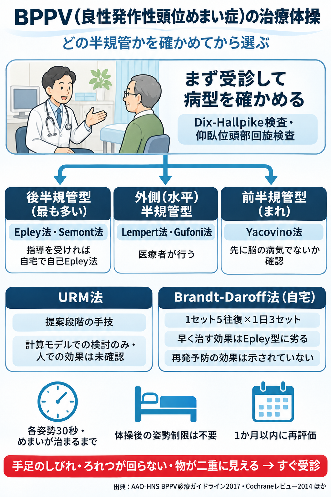

BPPVの治療体操：どの半規管かを確かめてから選ぶ
良性発作性頭位めまい症（BPPV）の治療体操を、病型ごとの手技、URM法とBrandt-Daroff法の位置づけ、共通の注意点とあわせて1枚にまとめた図です。
画像をクリック／タップすると原寸で表示します。

図の要点
- 病型を確かめてから選ぶ：最も多い後半規管型ではEpley法が第一に勧められ、外側半規管型はLempert法かGufoni法、まれな前半規管型ではYacovino法などが報告されています。
- URM法は提案段階：3次元の計算モデルで検討された手技で、患者を対象にした臨床試験はまだありません。
- Brandt-Daroff法は自宅で行える選択肢：ただし早く治す効果はEpley型に劣り、続けても再発を防ぐ効果は示されていません。
出典と注意
米国耳鼻咽喉科・頭頸部外科学会（AAO-HNS）BPPV診療ガイドライン（2017年改訂）、Cochraneレビュー（Hilton & Pinder, 2014）、Barretoら（2023）ほか、記事の参考文献に基づいて作成。一般的な医学情報であり、個々の治療方針は主治医と相談してください。